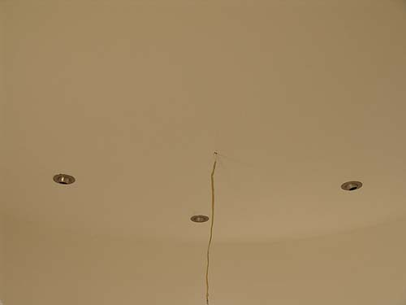

More Finishing Pictures
Lights for Christmas and finishing up
the 3rd floor.
Really finishing will take forever, but
floors, texture and
paint are getting it closer.
I found cool flickering light candles
to put in the windows. It definitely gives a look to the house at night
when we drive up. Next will be lighting up the Christmas tree in the 3rd
floor window.
George inspecting the Christmas tree
on the 3rd floor. I think we'll set it on a little table to raise it up
to window height. Lights might go on tonight.

The recessed lights that Bart chose
(oh and yes, the ceiling is painted).
A fan will go where the wire is coming
out of the ceiling.
The pretty floor is down, too.
We haven't decided if this will be the final or sub floor. On my floor
we'll do this, stain and seal and put an area rug over it.
Here you can see the wall texture
I did. This is on all the flat walls on the third floor. I still need to
finish the 1st floor and do the 2nd.
I can do a room in a day if I put my mind
to it...
Close up of the texture. Bart wanted
really rough and I wanted more smooth. Since the 3rd floor is his, he got
rough.
There's one floor seam we might need
to sand down. the rest are almost invisible. I've started thinking about
baseboards for this room. It's really coming together.
Not a lot of room, but enough space
for a desk and shelves. Right now we're trying to find a place that's local
to get the protective railing to go around the stairwell. We're thinking
wood handrails and bottom rails and iron balusters for the 3rd floor. I'm
thinking all iron for the 2nd.